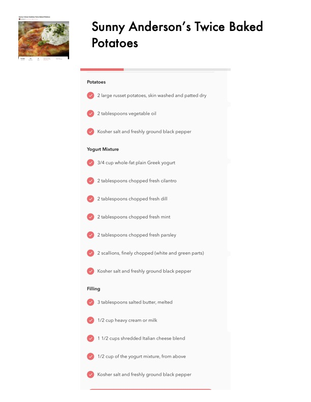

Sunny Anderson's Twice Baked

Original cookbook page 313
Ingredients
- 6 2 tablespoons chopped fresh cilantro
- 6 1/2 cup of the yogurt mixture, from above
Instructions
- Sunny Anderson's Twice Baked Potatoes
- 6 2 tablespoons chopped fresh cilantro
- eo 2 tablespoons chopped fresh dill
- rv) 2 tablespoons chopped fresh mint
- @ 2 tablespoons chopped fresh parsley
- rv] 2 scallions, finely chopped (white and green parts) rv) Kosher salt and freshly ground black pepper
- rv) 3 tablespoons salted butter, melted
- @ 1 1/2 cups shredded Italian cheese blend 6 1/2 cup of the yogurt mixture, from above
Recipe #313 from collection